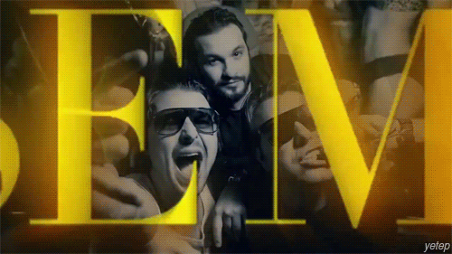
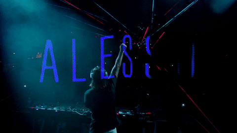
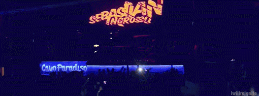
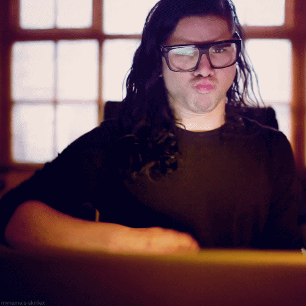
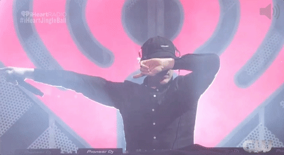
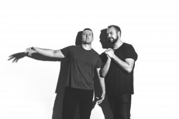
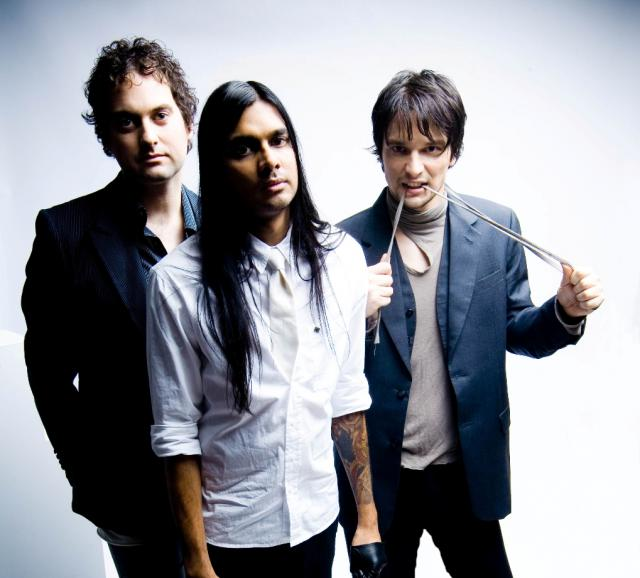
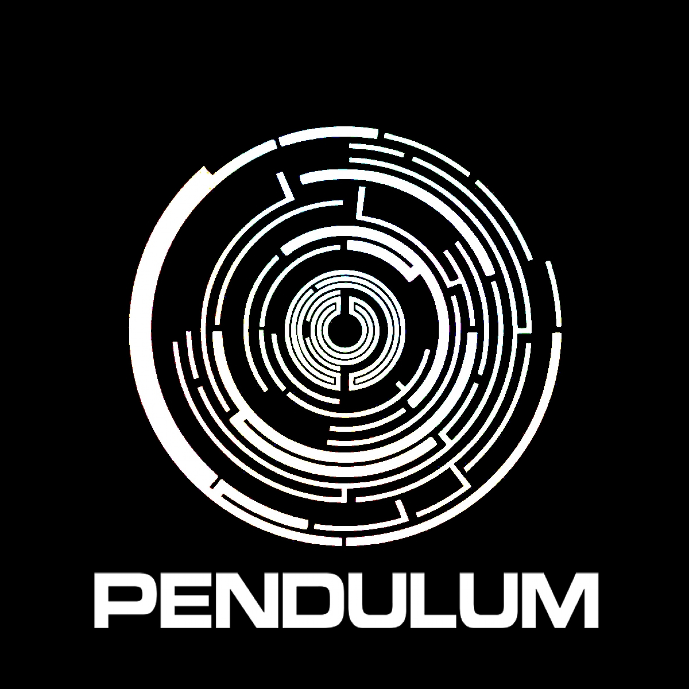

Inläming uppgift 2
och Steve Angello.
Swedish House Mafia
Axwell
Ingrosso
Skrillex
Diplo

home plate
Wolfgang Gartner
The Aston Shyffle
Frank Xavier.
Infusion
Paul Harding, Kevin Joseph Sawka och Ben Mount.
Pendulum
| Omslagsbild/Album | Grupp | Gruppmedlemmar | Senate albumet | Land | Mer information |
|---|---|---|---|---|---|
|  | Swedish House Mafia | Axwell, Sebastian Ingrosso och Steve Angello. |
Until Now | Sverige |
Wikipedia Swedish House Mafia |
| Axwell | Axel Hedfors | More than you know | Sverige |
Wikipedia Axwell |
|
|  | Alesso | Alessandro Rodolfo | Forever | Sverige | Wikipedia Alesso |
|  | Ingrosso | Sebastian Ingrosso | More Than You Know | Sverige |
Wikipedia Ingrosso |
| Avicii | Tim Lidén | Stories | Sverige | Wikipedia Avicci | |
|  | Skrillex | Sonny Moore | Skrillex and Diplo present Jack Ü | USA |
Wikipedia Skrillex |
|  | Diplo | Thomas Pentz | Skrillex and Diplo present Jack Ü | USA |
Wikipedia Diplo |
|
|
Wolfgang Gartner | Joseph Youngman |
10 ways to steal home plate |
USA |
Wikipedia Wolfgang Gartner |
|  | The Aston Shuffle | Mikah Freeman och Vance Musgrove | Photographs | Australien |
Wikipedia The Aston Shyffle |
|  | Infusion | Manuel Sharrad, Jamie Stevens och Frank Xavier. |
Summer und so | Australien |
Wikipedia Infusion |
|  | Pendulum |
Rob Swire, Gareth McGrillen, Perry ap Gwynedd, Paul Harding, Kevin Joseph Sawka och Ben Mount. |
Immersion | Australien |
Wikipedia Pendulum |